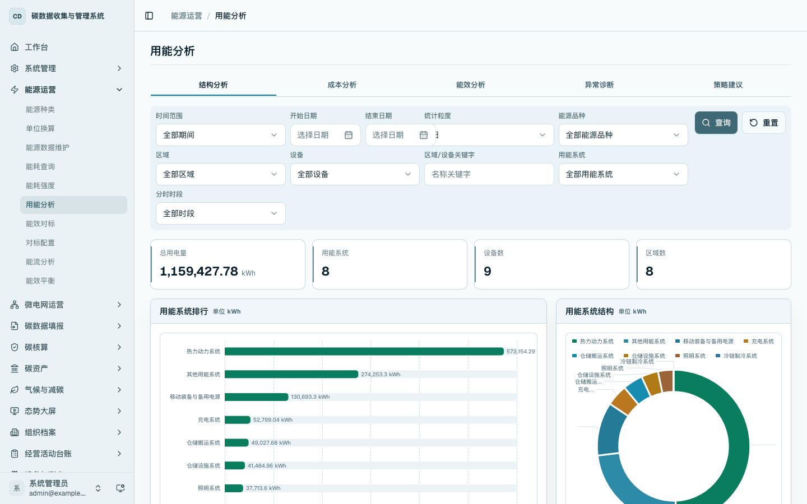
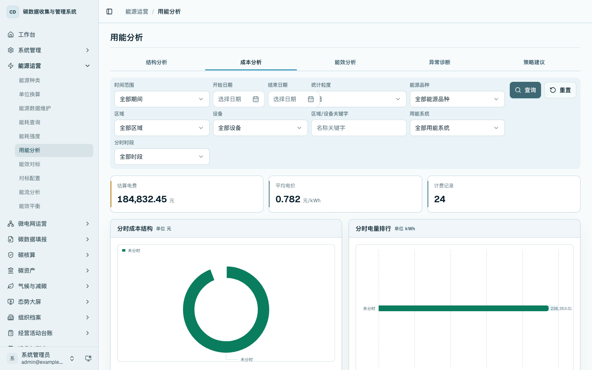
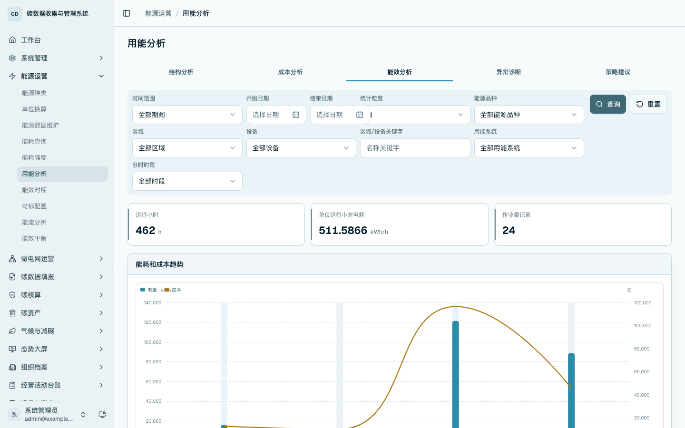
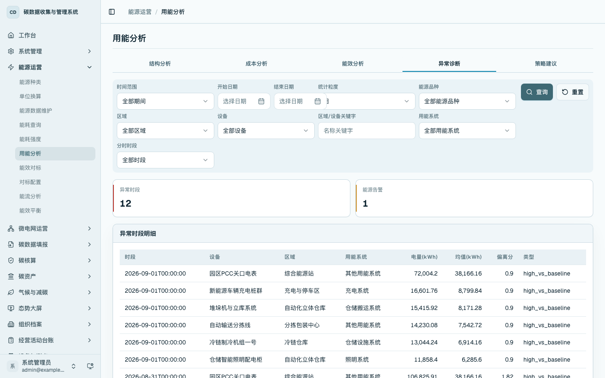
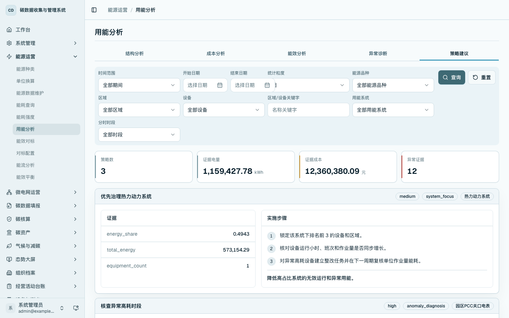

用能分析
本章说明如何查看用能结构、成本、能效、异常和策略建议。用能分析用于回答“能源主要消耗在哪里、费用结构如何、哪些对象需要关注”。
菜单位置
- 首页工作台：在
/home的「能源运营」区域点击「用能分析」进入。 - 侧边栏：进入「能源运营 / 用能分析」，打开
/energy/analysis。
结构分析
进入 /energy/analysis，默认打开「结构分析」页签。页面顶部的统一筛选条件支持时间范围、统计粒度、能源品种、区域、设备、用能系统、分时时段和区域关键字。点击「查询」后，系统按筛选条件重新聚合能源分析数据。
「结构分析」展示总用电量、用能系统数、设备数和区域数，并通过用能系统排行、用能系统结构、区域用能排行和设备用能排行识别重点用能对象。仓储场景中可用于比较仓储照明、空调通风、充电设施、分拣线、办公辅助等用能系统的构成。

成本分析
切换到「成本分析」页签，查看估算电费、平均电价、计费记录、分时成本结构和分时电量排行。用户可通过分时时段筛选峰段、平段或谷段，观察不同电价时段下的用能和费用构成。

能效分析
切换到「能效分析」页签，查看运行小时、单位运行小时电耗、作业量记录、能耗和成本趋势以及设备能效排行。该页适合按设备或区域查询，判断相同期间内重点设备的用电量、费用和记录数量。

异常诊断
切换到「异常诊断」页签，查看异常时段、能源告警和异常时段明细。表格展示时段、设备、区域、用能系统、电量、均值、偏离分和异常类型，用于从分析结果中定位异常用能对象。

策略建议
切换到「策略建议」页签，查看平台基于当前筛选结果形成的节能策略。每条策略展示优先级、策略类型、目标对象、证据指标、实施步骤和预期效果。
用户在演示中可先选定一个区域或设备，再切换到本页查看针对该对象的策略建议。

操作要点
- 结构分析用于定位重点用能系统、区域和设备。
- 成本分析用于查看分时时段下的电量和费用构成。
- 能效分析用于比较设备和区域的运行效率。
- 异常诊断和策略建议用于形成运营关注项。